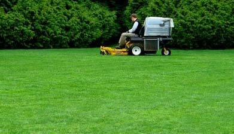

petak, 29. jul. 2011. 00:07
Održavanje travnjaka nije ni malo lak posao, naročito kada je u pitanju onaj dvorišni ukrasni. Svi se ostaju bez daha pred prelepim travnjacima kada prolaze kroz Sloveniju, Austriju, ali je veomamalibroj onih koji će to napraviti u svom dvorištu. Za pravilno održavanje travnjaka nesumnjivo je potreban novac, ali nedostatag istog svakako nije opravdanje. Reč je o nepostojanju navike i tradicije koja se teško stvara. Uz ne previše novca možete imati, uz potrebnu negu, tri do četiri godine lep travnjak. Ako se odlučimo da ulepšamo svoje dvorište lepim travnjakom, važno je znati odabrati najboju travnu smesu, a različitih marki I proizvođača je mnoštvo. Svakako da nije svaka trava pogodna za lep i kvalitetan travnjak. Vrste i sorte trava koje su pogodne za dekorativne travnjake dosta se razlikuju po svojstvima od istih vrsta koje koristimo za krmne kulture, tj. za košnju ili ispašu. Reč je o posebnim ukrasnim selekcijama koje moraju da prođu dugogodišnja ispitivanja i pro veravanje u praksi. Mi ćemo vam dati savet kako da vam održavanj travnjaka postane pravo uživanje.
Priprema zemlje
Posle čišenja terena gde ćete napraviti travnjak, potrebno je pripremiti zemlju. Što je bolje pripremljena podloga i travnjak će biti bolji. Za travnjake na teškom tlu može se preporučiti dodavanje peska. Ako je tlo lagano ili peskovito, treba dodati dovoljnu količinu supstrata da se obogati zemlja, te sprečiti isušivanje. Tokom poravnjavanja tla mora se voditi računa da se ne ukloni previše površinskog sloja zemlje. Zemlju treba dobro izgrabuljati. Pre setve po potrebi se dodaje đubrivo.
Kada treba posejati
Travne smese se mogu sejati u bilo koje doba godine, počev od ranog proleća pa sve do rane jeseni, pod uslovom da se u periodima suvog vremena podloga stalno održava vlažnom, sve dok se trava nije dobro primila (oko 5 cm).
Kako sejati
Da bi se dobila dobra podloga, preporučuje se 3 do 4 kg semena na 100 kvadratnih metara. Jedan od načina sejanja je raspodeliti područje na sekcije, a zatim raspodeliti seme u toliko čestica koliko ima sekcija. Posejte polovinu semena za jednu sekciju, s leva na desno. A potom drugu polovinu preko prvog sejanja. To će pomoći da se osigura jednaka raspodela preko cele predviđene površine.
Ishrana travnjaka
Probajte đubrivo nekoliko dana pre sejanja semena na podlozi. Travnjak treba nahraniti najmanje jednom u rano proleće, sredinom leta i još jednom u jesen. Đubrivo upotrebljeno u jesen treba da ima manji sastav azota ali više fosfora i kalijuma da bi podstaklo rast korena i otpornost na smrzavanje, sušu i bolest. Đubrite, ako ste u mogućnosti, specijalnim đubrivima za travnjake (mineralnim i organskim peletiranim).
Kosidba
Onda kada travnjak dostigne visinu od 6 – 8 cm, treba ga prvi put pokositi. Kosidbu treba obaviti lagano i postepeno, da bi se dobila idealna visina od 3 – 3,5 cm. Travnjak treba da se kosi redovno, ali treba nastojati da se ne ukloni više od trećine novonaraslog. Zadnjih nekoliko košenja u godini treba postepeno povećavati visinu trave, što je takođe preporučljivo I u sušnim periodima.